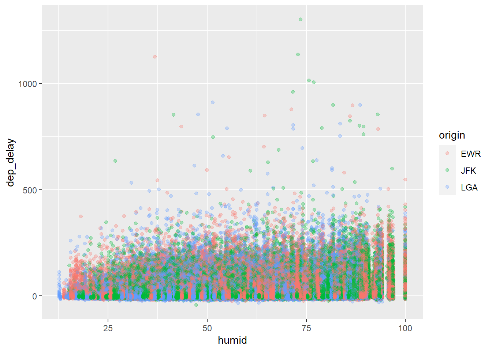

Chapter 10 Join Mutliple Datasets
It’s rare that data scientists work with only a single table of data during a project. Typically you have many tables of data, and you must combine them to answer the questions that you’re interested in. Collectively, multiple tables of data are called relational data because it is the relations, not just the individual datasets, that are important.
As an illustration, in addition to the flights dataset, we will use
“planes.csv”, which contains the information about the airplane for each flights in the “flights.csv” dataset
and “weather.csv” dataset, which contains the weather information for the time period when “flights.csv” is collected.
First thing first, we need to load the data.table into R.
Let’s read these three data file into R using fread() and examine these datasets.
## Classes 'data.table' and 'data.frame': 336776 obs. of 19 variables:
## $ year : int 2013 2013 2013 2013 2013 2013 2013 2013 2013 2013 ...
## $ month : int 1 1 1 1 1 1 1 1 1 1 ...
## $ day : int 1 1 1 1 1 1 1 1 1 1 ...
## $ dep_time : int 517 533 542 544 554 554 555 557 557 558 ...
## $ sched_dep_time: int 515 529 540 545 600 558 600 600 600 600 ...
## $ dep_delay : int 2 4 2 -1 -6 -4 -5 -3 -3 -2 ...
## $ arr_time : int 830 850 923 1004 812 740 913 709 838 753 ...
## $ sched_arr_time: int 819 830 850 1022 837 728 854 723 846 745 ...
## $ arr_delay : int 11 20 33 -18 -25 12 19 -14 -8 8 ...
## $ carrier : chr "UA" "UA" "AA" "B6" ...
## $ flight : int 1545 1714 1141 725 461 1696 507 5708 79 301 ...
## $ tailnum : chr "N14228" "N24211" "N619AA" "N804JB" ...
## $ origin : chr "EWR" "LGA" "JFK" "JFK" ...
## $ dest : chr "IAH" "IAH" "MIA" "BQN" ...
## $ air_time : int 227 227 160 183 116 150 158 53 140 138 ...
## $ distance : int 1400 1416 1089 1576 762 719 1065 229 944 733 ...
## $ hour : int 5 5 5 5 6 5 6 6 6 6 ...
## $ minute : int 15 29 40 45 0 58 0 0 0 0 ...
## $ time_hour : POSIXct, format: "2013-01-01 05:00:00" "2013-01-01 05:00:00" ...
## - attr(*, ".internal.selfref")=<externalptr>## Classes 'data.table' and 'data.frame': 26115 obs. of 15 variables:
## $ origin : chr "EWR" "EWR" "EWR" "EWR" ...
## $ year : int 2013 2013 2013 2013 2013 2013 2013 2013 2013 2013 ...
## $ month : int 1 1 1 1 1 1 1 1 1 1 ...
## $ day : int 1 1 1 1 1 1 1 1 1 1 ...
## $ hour : int 1 2 3 4 5 6 7 8 9 10 ...
## $ temp : num 39 39 39 39.9 39 ...
## $ dewp : num 26.1 27 28 28 28 ...
## $ humid : num 59.4 61.6 64.4 62.2 64.4 ...
## $ wind_dir : int 270 250 240 250 260 240 240 250 260 260 ...
## $ wind_speed: num 10.36 8.06 11.51 12.66 12.66 ...
## $ wind_gust : num NA NA NA NA NA NA NA NA NA NA ...
## $ precip : num 0 0 0 0 0 0 0 0 0 0 ...
## $ pressure : num 1012 1012 1012 1012 1012 ...
## $ visib : num 10 10 10 10 10 10 10 10 10 10 ...
## $ time_hour : POSIXct, format: "2013-01-01 01:00:00" "2013-01-01 02:00:00" ...
## - attr(*, ".internal.selfref")=<externalptr>Weather is uniquely identify by “origin, year, month, day, hour”; it records the weather at particular origin airport at particular hour of a day. Generally, each dataset should have a set of variables (also called key) to uniquely identify an observation.
## Classes 'data.table' and 'data.frame': 3322 obs. of 9 variables:
## $ tailnum : chr "N10156" "N102UW" "N103US" "N104UW" ...
## $ year : int 2004 1998 1999 1999 2002 1999 1999 1999 1999 1999 ...
## $ type : chr "Fixed wing multi engine" "Fixed wing multi engine" "Fixed wing multi engine" "Fixed wing multi engine" ...
## $ manufacturer: chr "EMBRAER" "AIRBUS INDUSTRIE" "AIRBUS INDUSTRIE" "AIRBUS INDUSTRIE" ...
## $ model : chr "EMB-145XR" "A320-214" "A320-214" "A320-214" ...
## $ engines : int 2 2 2 2 2 2 2 2 2 2 ...
## $ seats : int 55 182 182 182 55 182 182 182 182 182 ...
## $ speed : int NA NA NA NA NA NA NA NA NA NA ...
## $ engine : chr "Turbo-fan" "Turbo-fan" "Turbo-fan" "Turbo-fan" ...
## - attr(*, ".internal.selfref")=<externalptr>The key of planes dataset is tailnum, the unique ID of a plane.
10.0.1 Join files using merge()
The merge() function also exists in data.frame to merge data.frames. data.table also implement this function so that we can use the merge() function to join two data.table.
Between we talk about the syntax of merge(), we need to understand the 4 different types of join.
inner join
full join
left join
right join
Don’t be overwhelmed! They are actually very similar. The general syntax of merge() is:
merge(x = dt1, y = dt2, by.x = “name”, by.y = “name”, all.x=FALSE, all.y=FALSE)
The 4 cases of all.x and all.y corresponds to 4 different types of join. Note that the default value of all.x and all.y are FALSE.
10.0.2 inner join
We will start with an example.
## tailnum year.x month day dep_time sched_dep_time dep_delay arr_time
## 1: N10156 2013 1 10 626 630 -4 802
## 2: N10156 2013 1 10 1120 1032 48 1320
## 3: N10156 2013 1 10 1619 1540 39 1831
## 4: N10156 2013 1 11 632 634 -2 810
## 5: N10156 2013 1 11 1116 1120 -4 1328
## 6: N10156 2013 1 11 1845 1819 26 1959
## sched_arr_time arr_delay carrier flight origin dest air_time distance hour
## 1: 800 2 EV 4560 EWR PIT 60 319 6
## 2: 1240 40 EV 4269 EWR CHS 99 628 10
## 3: 1744 47 EV 4667 EWR MSP 175 1008 15
## 4: 822 -12 EV 4334 EWR CMH 81 463 6
## 5: 1336 -8 EV 4298 EWR MCI 171 1092 11
## 6: 1932 27 EV 4520 EWR PWM 49 284 18
## minute time_hour year.y type manufacturer
## 1: 30 2013-01-10 06:00:00 2004 Fixed wing multi engine EMBRAER
## 2: 32 2013-01-10 10:00:00 2004 Fixed wing multi engine EMBRAER
## 3: 40 2013-01-10 15:00:00 2004 Fixed wing multi engine EMBRAER
## 4: 34 2013-01-11 06:00:00 2004 Fixed wing multi engine EMBRAER
## 5: 20 2013-01-11 11:00:00 2004 Fixed wing multi engine EMBRAER
## 6: 19 2013-01-11 18:00:00 2004 Fixed wing multi engine EMBRAER
## model engines seats speed engine
## 1: EMB-145XR 2 55 NA Turbo-fan
## 2: EMB-145XR 2 55 NA Turbo-fan
## 3: EMB-145XR 2 55 NA Turbo-fan
## 4: EMB-145XR 2 55 NA Turbo-fan
## 5: EMB-145XR 2 55 NA Turbo-fan
## 6: EMB-145XR 2 55 NA Turbo-fanThis is the inner join: only observations with tailnum in both data.table are kept. The unmatched observation is not kept. You can check the dimension of the merged data.table. You will find that the number of observation in the merged data is smaller than both flights and planes. This is because unmatched rows will be removed.
## [1] 284170 27Since “tailnum” has the same column name in both data.table, we can simplify the code as
If you examine tmp carefully, you will find the new variable year.x and year.y. This is because year appears in both flights and planes dataset; when merge these two datasets, we need to differentiate which dataset the year variable is from. Based on argument position, flight is at x and plane is at y, thus R will automatically rename the variables of same name to mark their sources.
10.0.3 full join
Full join keeps all observations that are in either data.table. The code is exactly the same except letting all.x=TRUE and all.y=TRUE, meaning the merge will keep all observation from x and all observation from y.
10.0.4 left join/right join
Left join adds information from the right data.table to the left data.table. E.g., we want to add the plane information to the flights dataset.
Since we want to add information to flights, therefore, we will keep all flights information; Thus, in the above code, we set all.x=TRUE.
Right join is essentially the same with left join; we can always switch the position of x and y data.table to achieve the same goal.
left/right join is the most common join in data analysis, because we constantly need to add information to the main dataset.
10.1 Merge dataset using data.table syntax
The data.table syntax for joining is as below:
DT2[DT1, on=.(name)]
The code will add information from DT2 to DT1, and the variable to match DT1 and DT2 is name. The default join in data.table is right join.
If the variable name are different in DT1 and DT2, we can modify the code as:
DT2[DT1, on=c(name2=“name1”)]
Let’s look at an example: add the planes information to the flights dataset.
## [1] 336776 27## tailnum year type manufacturer model engines seats
## 1: N14228 1999 Fixed wing multi engine BOEING 737-824 2 149
## 2: N24211 1998 Fixed wing multi engine BOEING 737-824 2 149
## 3: N619AA 1990 Fixed wing multi engine BOEING 757-223 2 178
## 4: N804JB 2012 Fixed wing multi engine AIRBUS A320-232 2 200
## 5: N668DN 1991 Fixed wing multi engine BOEING 757-232 2 178
## 6: N39463 2012 Fixed wing multi engine BOEING 737-924ER 2 191
## speed engine i.year month day dep_time sched_dep_time dep_delay arr_time
## 1: NA Turbo-fan 2013 1 1 517 515 2 830
## 2: NA Turbo-fan 2013 1 1 533 529 4 850
## 3: NA Turbo-fan 2013 1 1 542 540 2 923
## 4: NA Turbo-fan 2013 1 1 544 545 -1 1004
## 5: NA Turbo-fan 2013 1 1 554 600 -6 812
## 6: NA Turbo-fan 2013 1 1 554 558 -4 740
## sched_arr_time arr_delay carrier flight origin dest air_time distance hour
## 1: 819 11 UA 1545 EWR IAH 227 1400 5
## 2: 830 20 UA 1714 LGA IAH 227 1416 5
## 3: 850 33 AA 1141 JFK MIA 160 1089 5
## 4: 1022 -18 B6 725 JFK BQN 183 1576 5
## 5: 837 -25 DL 461 LGA ATL 116 762 6
## 6: 728 12 UA 1696 EWR ORD 150 719 5
## minute time_hour
## 1: 15 2013-01-01 05:00:00
## 2: 29 2013-01-01 05:00:00
## 3: 40 2013-01-01 05:00:00
## 4: 45 2013-01-01 05:00:00
## 5: 0 2013-01-01 06:00:00
## 6: 58 2013-01-01 05:00:00The dimension of the merged dataset indicates that all rows of flights dataset are kept. This is because we are adding plane information to the flights dataset. Be really careful about the where to put the main dataset (should be inside the [] because the default is right join).
Examing the merged dataset, you will find a new variable i.year, which indicates the year from flights dataset (because flights is in the i argument position).
For inner join, i.e., removing unmatched rows, we can set nomatch=0, as shown below:
## [1] 284170 27Full join is not possible with the data.table syntax, use the merge() function instead. You must be wondering why we need another way of joining data.table. This is because, with the data.table syntax, we can chain the inquiry like this DT[…][…][…].
10.2 Chaining Join and Data Manipulation
data.table expressions can be chained in sequence: DT[…][…][…]. This enables us to join multiple data.table and then manipulate the merged data.table for insights.
E.g., we want to compute the market share of airplane manufacturers in terms of the number flights using the airplanes made by the manufacturers. We need to first include the manufacturer information to the flights dataset and then compute the count statistics.
## manufacturer count
## 1: BOEING 82912
## 2: AIRBUS 47302
## 3: AIRBUS INDUSTRIE 40891
## 4: CANADAIR 1594
## 5: <NA> 52606
## 6: MCDONNELL DOUGLAS AIRCRAFT CO 8932
## 7: EMBRAER 66068
## 8: MCDONNELL DOUGLAS CORPORATION 1259
## 9: BOMBARDIER INC 28272
## 10: MCDONNELL DOUGLAS 3998
## 11: GULFSTREAM AEROSPACE 499
## 12: CESSNA 658
## 13: HURLEY JAMES LARRY 17
## 14: CIRRUS DESIGN CORP 291
## 15: PIPER 162
## 16: FRIEDEMANN JON 63
## 17: ROBINSON HELICOPTER CO 286
## 18: PAIR MIKE E 25
## 19: BARKER JACK L 252
## 20: LAMBERT RICHARD 54
## 21: MARZ BARRY 44
## 22: CANADAIR LTD 103
## 23: BEECH 47
## 24: AMERICAN AIRCRAFT INC 42
## 25: LEBLANC GLENN T 40
## 26: STEWART MACO 55
## 27: DEHAVILLAND 63
## 28: AVIAT AIRCRAFT INC 18
## 29: AGUSTA SPA 32
## 30: KILDALL GARY 51
## 31: BELL 65
## 32: LEARJET INC 19
## 33: DOUGLAS 22
## 34: SIKORSKY 27
## 35: AVIONS MARCEL DASSAULT 4
## 36: JOHN G HESS 3
## manufacturer countE.g., we want to know the average seat avialable between each origin,dest pair, which shows how well the two nodes are connected. The seats information is in the planes dataset, thus we need to first add planes to the flights dataset.
tmp=planes[flights, on=.(tailnum)][,.(avg_seat=mean(seats,na.rm = TRUE)), by=.(origin, dest)]
head(tmp)## origin dest avg_seat
## 1: EWR IAH 190.9485
## 2: LGA IAH 170.4513
## 3: JFK MIA 180.9665
## 4: JFK BQN 196.6559
## 5: LGA ATL 148.1784
## 6: EWR ORD 176.602110.3 Exercise
Suppose you are developing a system that can check the weather condition at each flight. One important task is to add the weather information to the flights dataset. Note that the key of the weather dataset is: year, month, day, hour, origin; in other words, this set of variable uniquely identify an observation in weather dataset.
You can do that using merge() function:
## year month day hour origin dep_time sched_dep_time dep_delay arr_time
## 1: 2013 1 1 5 EWR 517 515 2 830
## 2: 2013 1 1 5 EWR 554 558 -4 740
## 3: 2013 1 1 5 JFK 542 540 2 923
## 4: 2013 1 1 5 JFK 544 545 -1 1004
## 5: 2013 1 1 5 JFK 559 559 0 702
## 6: 2013 1 1 5 LGA 533 529 4 850
## sched_arr_time arr_delay carrier flight tailnum dest air_time distance
## 1: 819 11 UA 1545 N14228 IAH 227 1400
## 2: 728 12 UA 1696 N39463 ORD 150 719
## 3: 850 33 AA 1141 N619AA MIA 160 1089
## 4: 1022 -18 B6 725 N804JB BQN 183 1576
## 5: 706 -4 B6 1806 N708JB BOS 44 187
## 6: 830 20 UA 1714 N24211 IAH 227 1416
## minute time_hour.x temp dewp humid wind_dir wind_speed wind_gust
## 1: 15 2013-01-01 05:00:00 39.02 28.04 64.43 260 12.65858 NA
## 2: 58 2013-01-01 05:00:00 39.02 28.04 64.43 260 12.65858 NA
## 3: 40 2013-01-01 05:00:00 39.02 26.96 61.63 260 14.96014 NA
## 4: 45 2013-01-01 05:00:00 39.02 26.96 61.63 260 14.96014 NA
## 5: 59 2013-01-01 05:00:00 39.02 26.96 61.63 260 14.96014 NA
## 6: 29 2013-01-01 05:00:00 39.92 24.98 54.81 250 14.96014 21.86482
## precip pressure visib time_hour.y
## 1: 0 1011.9 10 2013-01-01 05:00:00
## 2: 0 1011.9 10 2013-01-01 05:00:00
## 3: 0 1012.1 10 2013-01-01 05:00:00
## 4: 0 1012.1 10 2013-01-01 05:00:00
## 5: 0 1012.1 10 2013-01-01 05:00:00
## 6: 0 1011.4 10 2013-01-01 05:00:00We can plot the dep_delay against the weather condition (e.g., humid) at the origin airport to see whether there is a relationship between these two
# load the ggplot2 package into R
library(ggplot2)
# scatter plot with humid on x, dep_delay on y
ggplot(tmp, aes(humid,dep_delay, col=origin))+
geom_point(position = "jitter", alpha=0.3)## Warning: Removed 9800 rows containing missing values (geom_point). What is your observation of the chart? 1) it seems to suggest a higher humidity is associated with a longer departure delay; 2) however, there also exist many departure delay in a non-humid weather, which will be attributed to other factors.
Or you can do that using the data.table syntax:
# note that the main data.table is inside []
tmp=weather[flights, on=.(year,month, day, hour, origin)]
dim(tmp)## [1] 336776 29Now, suppose a customer is inquiring the scheduled departure time and the weather condition for flights UA1714 for the date 2013-01-01. You will inquire the flight and return the temp, wind_speed, humid, and visib. Use the data.table syntax to chain the inquiry.
weather[flights, on=.(year,month, day, hour, origin)][
carrier=="UA" & flight==1714 & month==1 & day==1,.(year,month, day, hour, origin, carrier, flight, temp, wind_speed, humid, visib)]## year month day hour origin carrier flight temp wind_speed humid visib
## 1: 2013 1 1 5 LGA UA 1714 39.92 14.96014 54.81 1010.4 Summary
We reviewed the 4 types of join: inner join, full join, left/right join. The most commonly used is th left/right join because we need to add information from one dataset to the main dataset
We learn the merge() to join datasets: the syntax for adding dt2 to dt1 is: merge(dt1, dt2, by.x=“name1”, by.y=“name2”, all.x=TRUE)
We learn the data.table syntax for joining data.table: dt2[dt1, on=.(name)].
We learn to chain the join and computation with data.table syntax DT[…][…][…]
So far, we have learned how to manipulate big data with data.table package. What we have learned so far should cover you for most of the common data manipulation in a real job. I hope you are amazed and empowered by the data.table packages.